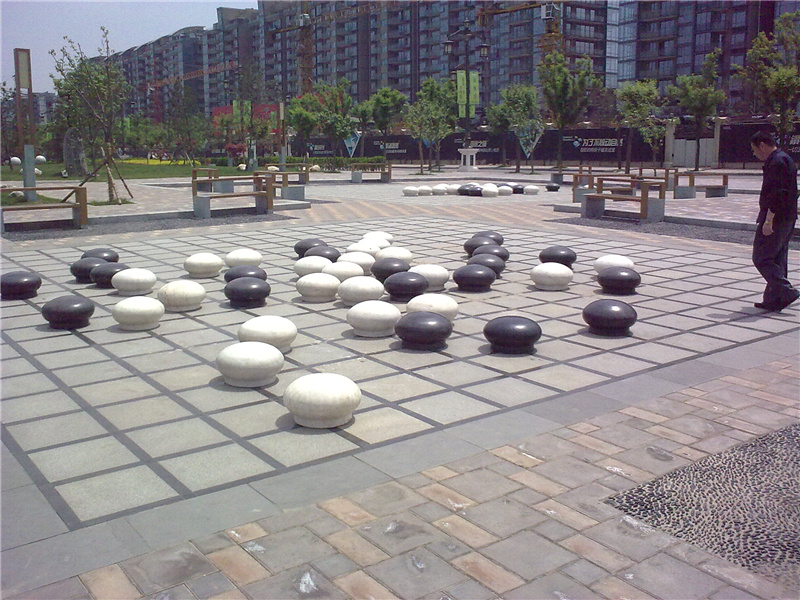
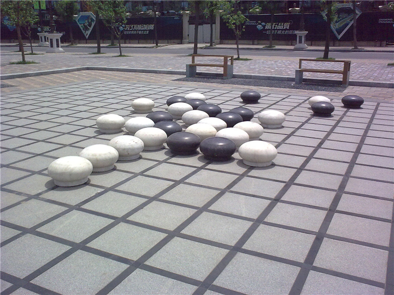
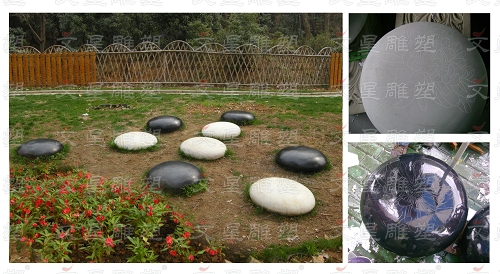

你没见过的五子棋3
首页
五子棋新闻
#1 你没见过的五子棋3 作者：悟石 发表时间：2011-9-9 0:31:51


啥也不说了，如图
［此帖子已被 小丸.net 在 2011-9-9 3:42:59 编辑过］
［ 以和为贵 于 2011-9-9 8:20:40 时花20金币送鲜花一朵］
［ wuxiao 于 2011-9-9 11:03:09 时花20金币送鲜花一朵］
#2 Re:你没见过的五子棋3 作者：雅匪 发表时间：2011-9-9 1:10:50
在哪呢
#3 Re:你没见过的五子棋3 作者：华夏使者 发表时间：2011-9-9 3:23:40
太乐观了，这明显是19X19
#4 Re:你没见过的五子棋3 作者：踵酃 发表时间：2011-9-9 5:13:25
玩的明明是围棋。 国家对围棋非常的重视。
#5 Re:你没见过的五子棋3 作者：蓝天蓝 发表时间：2011-9-9 7:15:20
棋盘够大
#6 Re:你没见过的五子棋3 作者：五子酷 发表时间：2011-9-9 8:17:55
构想不错。下得的确是五子棋，可惜用得是围棋盘，看来设计师是一位业余的五子棋爱好者
#7 Re:你没见过的五子棋3 作者：以和为贵 发表时间：2011-9-9 8:20:31
白连五V了？
#8 Re:你没见过的五子棋3 作者：悟石 发表时间：2011-9-9 8:41:53
在西安曲江某小区
#9 Re:你没见过的五子棋3 作者：冰雪笑醉 发表时间：2011-9-9 8:53:59
 叫牛牛复盘
叫牛牛复盘
#10 Re:你没见过的五子棋3 作者：雅匪 发表时间：2011-9-9 9:59:05
明明是18路五子棋嘛
#11 Re:你没见过的五子棋3 作者：魔铃 发表时间：2011-9-9 10:55:53
数第一张图片比较清楚了，是19了
#12 Re:Re:你没见过的五子棋3 作者：王小 发表时间：2011-9-9 11:02:32
我数过，的确是 19*19 的围棋棋盘。围棋都说自己是小众， 所以五子棋随意了哈。
#13 Re:你没见过的五子棋3 作者：小元 发表时间：2011-9-9 11:55:44
明显是围棋棋盘
#14 Re:Re:你没见过的五子棋3 作者：奇林 发表时间：2011-9-9 12:24:45
引用：
原文由 冰雪笑醉 发表于 2011-9-9 8:53:59 :
叫牛牛复盘
我就算了吧,围棋要找莹莹复盘
#15 Re:你没见过的五子棋3 作者：高飞 发表时间：2011-9-9 12:43:39
你不是已经拜师了么，什么时候围棋我修理你几盘。
#16 Re:你没见过的五子棋3 作者：清风明月月 发表时间：2011-9-9 12:58:03
高老师啥时围棋让我切你几盘，，，
#17 Re:你没见过的五子棋3 作者：掌棋宣传员 发表时间：2011-9-9 13:51:54
 ［ 雅匪 于 2011-9-9 15:57:11 时花20金币送鲜花一朵］
#18 Re:Re:你没见过的五子棋3 作者：奇林 发表时间：2011-9-9 14:13:39
引用：
原文由 高飞 发表于 2011-9-9 12:43:39 :
你不是已经拜师了么，什么时候围棋我修理你几盘。
还没开始教 我们说好了 今年智运后 开始教
#19 Re:你没见过的五子棋3 作者：文英 发表时间：2011-9-9 14:43:48
这么大。。。
#20 Re:Re:你没见过的五子棋3 作者：雅匪 发表时间：2011-9-9 15:56:50
引用：
原文由 魔铃 发表于 2011-9-9 10:55:53 :
数第一张图片比较清楚了，是19了
第一张木有难度 有本事咱就从第二张数［此帖子已被 雅匪 在 2011-9-9 16:18:11 编辑过］
#21 Re:你没见过的五子棋3 作者：佛心诚 发表时间：2011-9-9 17:41:22
有意思，用的是19路的棋盘吧，仔细数了一下
#22 Re:你没见过的五子棋3 作者：何柔 发表时间：2011-9-9 19:34:48
下棋还得叫个大力士搬棋子，
#23 Re:你没见过的五子棋3 作者：dyccj 发表时间：2011-9-10 8:38:06
如果是十九路，又是这种下法，明显是六子棋。
#24 Re:你没见过的五子棋3 作者：林夕云鬼 发表时间：2011-9-22 15:06:24
还真是么见过！